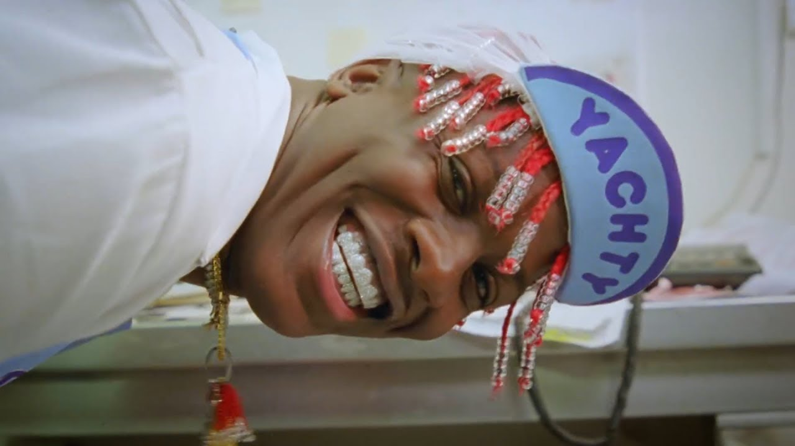

길거리를 걸으면서 나는 자존심과 이가 나갔어. Walking on the pavement I chipped my pride and my teeth on

나와 함께 자란 소녀는 한 두집아래에 살고있어
The girl I grew up with lives a couple houses down 그녀들은 S컬을 흩날리곤 했지 Used to rock the S curl 나는 넥스텔을 갖고 싶었는데 우리 엄마는 레이저를 훔쳐다 줬어 *모토로라 레이저* Wanted me a Nextel but my momma copped a Razr 그게 내가 그녀를 탓할 수 없는 이유지 That's why I couldn't blame her 폴더폰을 여닫듯이 내 과거를 훑어보고 있어 Flipping through my past like I used to flip the phone 사람들은 흑인들을 내쫓고 모든 집들은 똑같아져가 *amine의 고향인 포틀랜드는 백인이 많던 도시로, 집값이 비싸지자 유색인종들은 교외 지역으로 갈 수 밖에 없었다.그런 빈집들은 없애고 McMansion과 같은 호화맨션들이 생겼다.* They kicking out the blacks and all the houses getting clones 친구들은 약을 하고 Du's Grill에서만 밥을 먹곤했어 Friends used to do pills and only eat at Du's Grill 음식도 맛있었지만 난 그 시간들이 훨씬 좋았어 The food was pretty good but the times was better